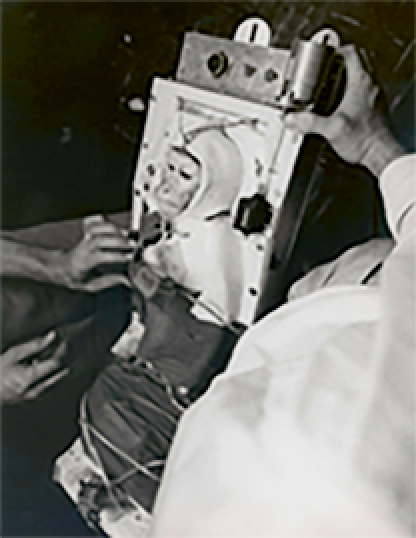

..............................우주 동물 실험 내용..............................
단순한 ‘살아있는 상태’를 넘어 ‘다양한 생리적 변화를 추적’ 하는 것이 목표였습니다.
미세중력의 영향, 방사선, 혈액 순환과 호흡, 면역 체계 등을 조사하고
이를 연구할 수 있도록 정보를 지구로 보내는 것이 실험의 주요 내용이었습니다.

지구의 자원이 바닥나고, 우주엔 무궁무진한 일과 자원들이 기다리고 있다고 사람들은 말했습니다.
중력없이도 거미줄을 치는 거미
우주에서 잉태한 바퀴벌레 알
달 기지로 배달하여 부화시키는 프로그램을 위한 물고기 알
번식 실험을 위해 준비하는 쥐와 원숭이
.
.
.
달 그리고 화성으로 가기 위한 단백질 공급원으로서 동물을 키울 필요성이 생기고,
공간과 물이 적게 들기 때문에 귀뚜라미, 번데기, 야자 바구미 유충등을 키우는 곤충 농장이 적합하다 주장했습니다.
현재 또한 우주로 나아갈 준비를 위하여
미생물, 동물, 인간을 통한 실험과 연구를 끊임없이 진행하고 있습니다.